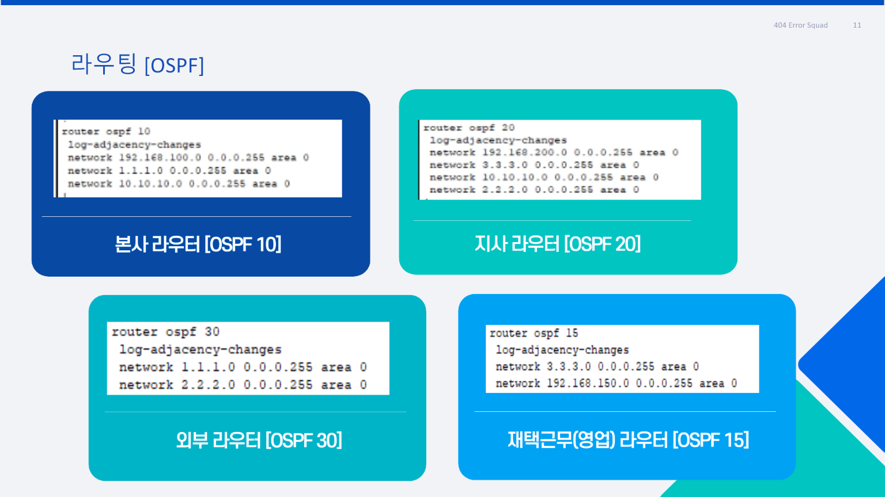
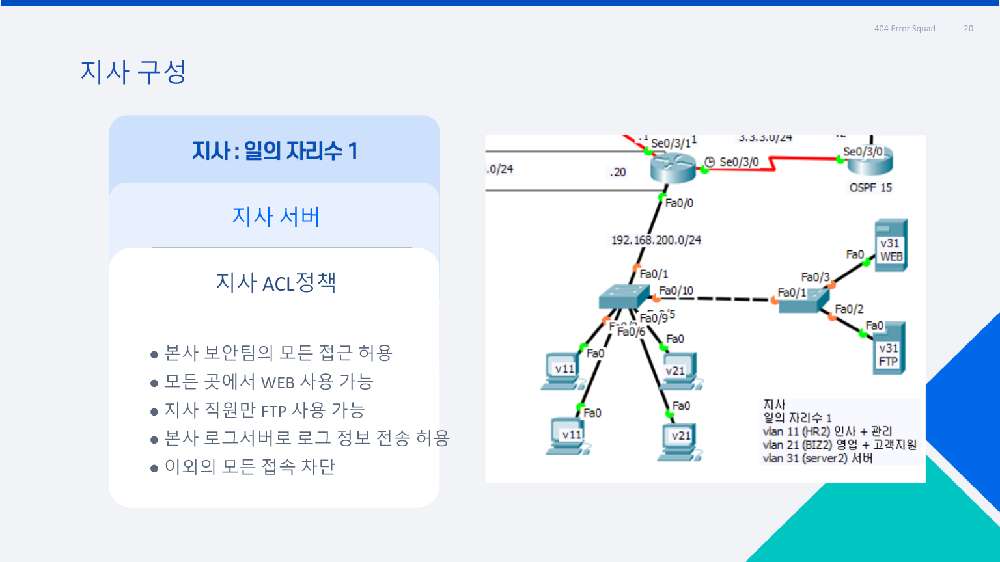
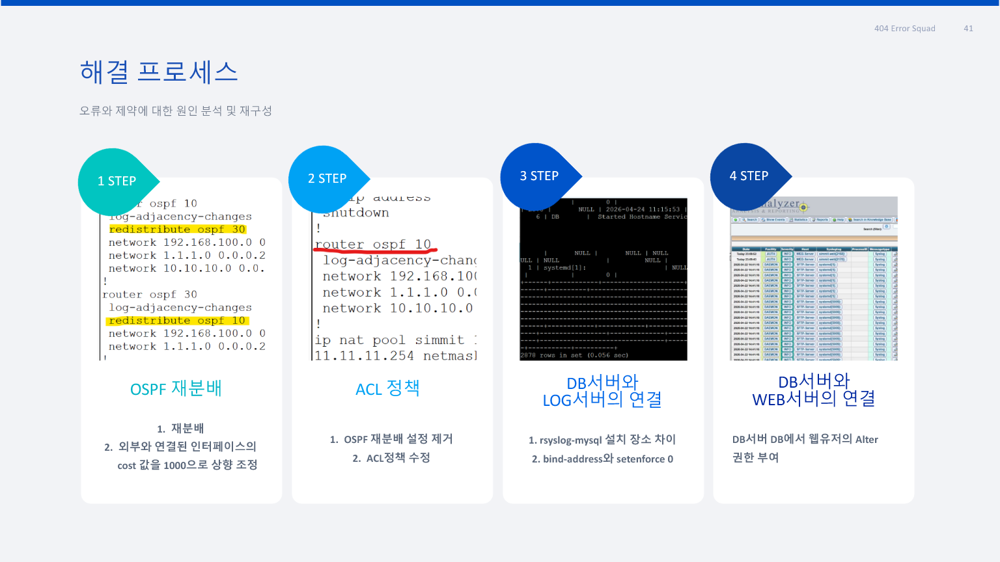
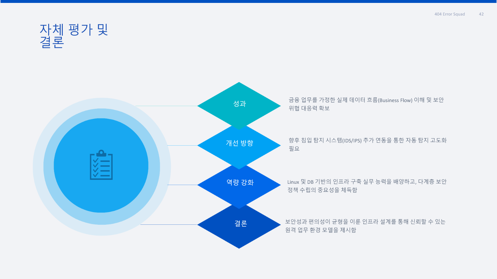

01 / OVERVIEW
금융 서비스 운영에 필요한 네트워크와
보안 환경을 한 번에 구성한 프로젝트입니다.
SIMMIT PAY는 회원가입, 로그인, 계좌 생성과 송금 기능을 제공하는 가상의 금융 플랫폼입니다. 서비스 운영을 위해 WEB·DB·DNS·FTP·LOG 서버를 역할별로 나누고, 본사와 지사, 재택근무자가 필요한 서비스에 접속할 수 있도록 전체 인프라를 구성했습니다.
금융 정보를 다루는 환경인 만큼 통신만 되게 만드는 것으로 끝내지 않았습니다. VLAN으로 부서를 분리하고 ACL과 방화벽으로 접근 범위를 제한했습니다. 본사와 지사는 VPN으로 연결하고 Dynamic NAT를 적용했으며, 서버에서 발생한 로그는 중앙 로그 서버로 모으도록 구성했습니다.
MY FOCUS
저는 Packet Tracer에서 전체 네트워크 토폴로지를 구축하고 VLAN과 Routing 설정에 참여했습니다. 그중 가장 많은 시간을 들인 작업은 ACL 정책을 장비에 적용하고, 허용해야 할 통신과 차단해야 할 통신이 기준대로 동작할 때까지 계속 테스트한 것입니다.
02 / PROCESS
계획부터 최종 검증까지
- 01계획서 작성·제출
약 이틀 동안 프로젝트 범위와 네트워크 구성을 정리해 제출하고 강사 피드백을 반영했습니다.
- 02네트워크 구현
부서별 VLAN, 주소 체계와 라우팅을 구성하고 본사·지사 구간의 기본 연결성을 확인했습니다.
- 03ACL 구현·반복 검증
본사·지사·재택근무의 접근 기준을 장비 정책으로 변환하고 허용·차단 시나리오를 반복 테스트했습니다.
- 04VPN·Dynamic NAT 협업
팀원과 함께 구성을 완성했습니다. 제 단독 기여로 강조하기보다 전체 네트워크 완성을 위한 협업 항목으로 구분했습니다.
- 05통신 검증·최종 보고
전체 구성 완료 후 본사·지사 네트워크 시연 영상을 직접 제작하고, 테스트 결과를 최종보고서에 정리했습니다.
03 / MY ROLE
기여도를 정확하게 구분했습니다.
ACL 정책·검증
- 본사·지사 접근 기준 정리
- ACL 규칙과 적용 방향 설정
- 허용·차단 시나리오 반복 테스트
- 본사·지사 시연 영상 제작
VLAN·Routing
Packet Tracer에서 부서별 네트워크와 구간 연결을 구성하고 전체 통신 흐름을 확인했습니다.
VPN·Dynamic NAT
팀원과 함께 구성했습니다. 팀원이 더 큰 비중으로 수행한 영역이므로 공동 작업으로 표현했습니다.
Server Infrastructure
서버 구축은 다른 팀원이 담당했습니다. 저는 네트워크 관점에서 서버 연결과 접근 정책 검증에 집중했습니다.
04 / ARCHITECTURE
본사·지사·재택근무를 하나의 테스트 환경으로 연결
본사는 인사·개발·영업·재무·보안·서버 VLAN으로, 지사는 인사·영업·서버 VLAN으로 분리했습니다. 구성도를 기준으로 사용자와 서버 사이의 예상 통신 경로를 확인한 뒤 ACL을 적용했습니다.
05 / ACL POLICY
업무 요구사항을 허용·차단 규칙으로 변환했습니다.
접근 주체허용 서비스정책 의도
일반 부서WEB · FTP · DNS
업무에 필요한 공통 서비스만 허용
개발·재무·보안DB
DB 사용이 필요한 부서로 접근 범위 제한
개발·보안LOG
로그 확인 권한이 필요한 인원만 허용
본사 보안팀본사·지사 관리 통신
관리와 장애 확인을 위한 예외 권한
기타 트래픽DENY
정의되지 않은 접근은 기본 차단
ACL은 규칙 하나의 순서나 적용 방향이 틀려도 필요한 통신까지 차단될 수 있었습니다. 기준표를 출발지·목적지·서비스 단위로 나누고, 한 경로씩 검증하며 문제를 좁혔습니다.
06 / TROUBLESHOOTING
“연결된다”가 아니라
“정책대로 연결된다”를 확인
통신 실패가 발생하면 라우팅 문제인지 ACL 문제인지 먼저 구분했습니다. 이후 출발지·목적지 주소, 인터페이스 방향, 규칙 순서와 서비스 포트를 차례로 대조했습니다.
- 필요한 서비스의 정상 연결 확인
- 비인가 부서와 외부 접근 차단 확인
- 본사·지사·재택근무 시나리오별 재시험
- 성공과 실패 결과를 시연 영상으로 기록

07 / TEST SCENARIOS
ACL 기준표를 네 가지 통신 구간으로 나누어 검증했습니다.
처음에는 규칙을 한 번에 적용하려고 하면서 어느 조건에서 통신이 막히는지 찾기 어려웠습니다. 이후 본사 내부, 본사에서 지사, 지사에서 본사, 재택근무 구간으로 테스트 범위를 나누고 각 구간에서 출발지·목적지·서비스를 하나씩 바꾸어 결과를 확인했습니다.
본사 내부
일반 부서 간 Ping은 제한하고 보안팀은 관리 목적으로 전체 구간을 확인하도록 구성했습니다.
- 전 부서 WEB·FTP·DNS 확인
- DB는 개발·재무·보안만 허용
- LOG는 개발·보안 중심으로 허용
본사 → 지사
업무 서버에 필요한 서비스만 허용하고 임의의 Ping과 불필요한 부서 간 통신은 차단했습니다.
- 지사 WEB 접근 확인
- 보안·서버 구간 FTP 확인
- 인사·영업 동일 부서 예외 검증
지사 → 본사
지사 사용자는 본사 WEB·DNS를 사용하고 지사 서버는 로그 전송 경로만 추가로 허용했습니다.
- 본사 WEB·DNS 접근 확인
- 지사 서버 LOG 전송 확인
- 그 외 본사 내부 접근 차단
재택근무
업무용 WEB·FTP 범위만 사용하도록 제한하고 내부망 Ping은 차단했습니다.
- 본사 WEB·FTP 확인
- 지사 WEB 접근 확인
- 내부망 직접 Ping 차단
08 / ITERATION
규칙 하나를 바꿀 때마다 해당 경로부터 다시 확인했습니다.
ACL은 위에서부터 순서대로 평가되므로 넓은 차단 규칙이 앞에 있거나 적용 방향을 잘못 지정하면 이후 허용 규칙이 있어도 통신이 실패했습니다. 설정을 무작정 바꾸지 않고 다음 순서로 원인을 좁혔습니다.
- 기본 연결성 확인ACL을 제외했을 때 라우팅과 인터페이스가 정상인지 확인
- 적용 위치 확인어느 인터페이스의 inbound/outbound에 적용되었는지 확인
- 규칙 순서 확인필요한 permit보다 넓은 deny가 먼저 평가되는지 점검
- 서비스 단위 확인Ping, WEB, FTP, DNS, DB, LOG를 개별 시험
- 반대 조건 확인허용 대상은 연결되고 비인가 대상은 실패하는지 함께 검증


09 / DELIVERABLES
최종보고서와 직접 제작한 시연 영상
전체 구성이 완료된 뒤 ACL, VPN, Dynamic NAT까지 포함한 최종 상태에서 본사와 지사의 통신이 정책대로 동작하는지 시나리오별로 녹화했습니다.
FINAL REPORT · PPTX
PPT 다운로드 ↓1차 프로젝트 최종보고서
프로젝트 배경, 설계, 역할, 구축 과정, 테스트와 트러블슈팅을 포함한 팀 최종 산출물입니다.
HEADQUARTERS본사 네트워크 시연
영상 파일 열기 ↗BRANCH지사 네트워크 시연
영상 파일 열기 ↗영상 제작 범위: 전체 Packet Tracer 네트워크 구축 완료 후 본사·지사 구간의 접근 허용, 차단 및 서비스 통신 결과 기록
10 / RESULT
테스트 과정을 재현 가능한 증거로 남겼습니다.
LEARNING
ACL은 명령어를 입력하는 작업이 아니라 업무 흐름을 접근 통제 정책으로 변환하는 작업임을 배웠습니다. 또한 정상 연결뿐 아니라 실패해야 하는 경로까지 확인해야 정책의 정확성을 설명할 수 있다는 점을 체득했습니다.
서버 구축은 팀원이 담당했지만, 네트워크에서 해당 서버까지 필요한 서비스가 도달하는지는 제가 구성한 정책과 시연을 통해 확인했습니다. 역할 경계를 분명히 하면서도 서로의 결과물이 연결되는 지점을 검증하는 협업 경험을 얻었습니다.